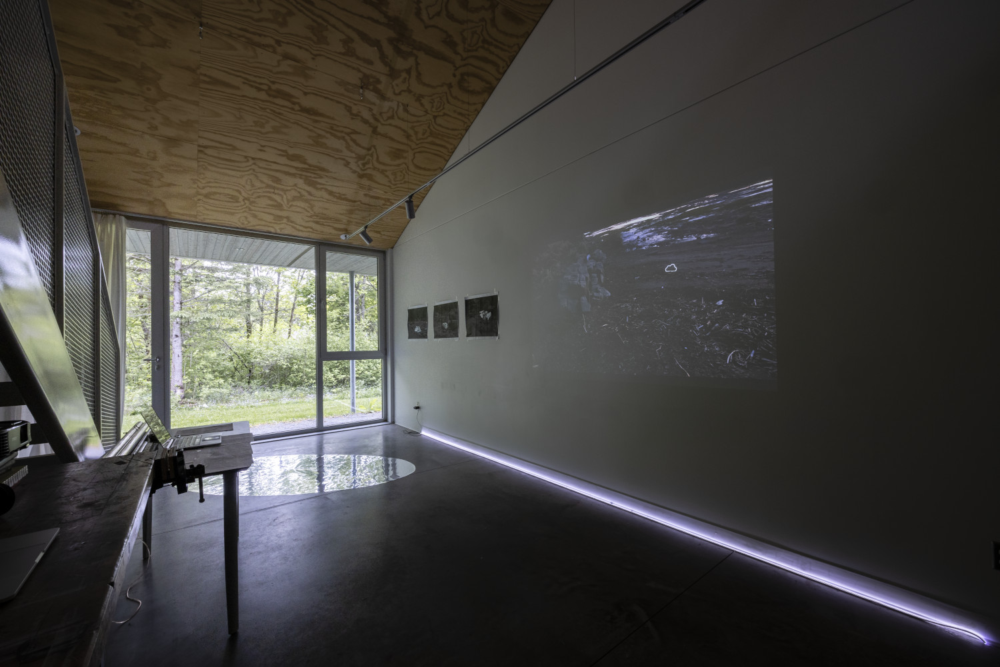
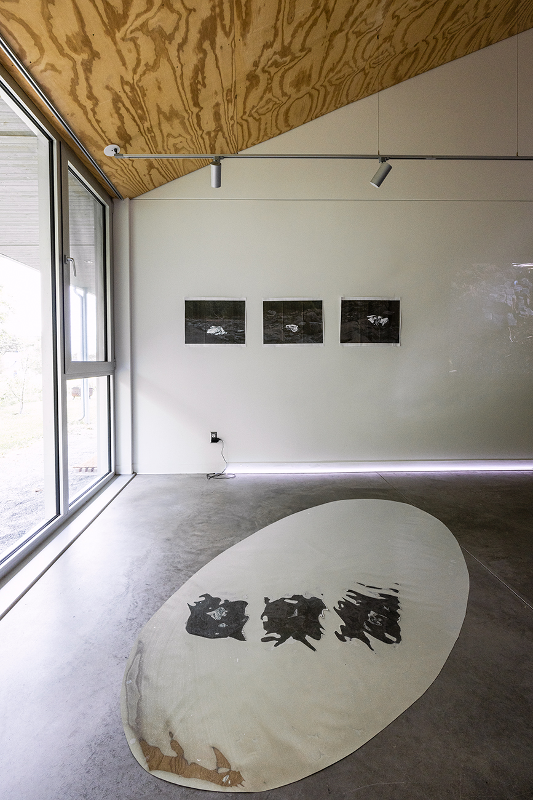

When the Angels Fell, 2023
Impression pigmentaire
Mylar, LED
Dimensions variables




Projet de recherche en cours et vues d'atelier à Est-Nord-Est, résidence d'artiste, Saint-Jean-Port-Joli
Crédits photo (vues d'atelier): Jean Sébastien Veilleux
Ce projet est soutenu par le Conseil des arts du Nouveau-Brunswick